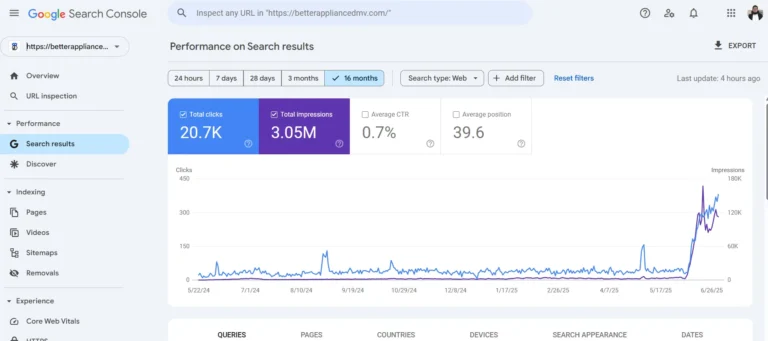
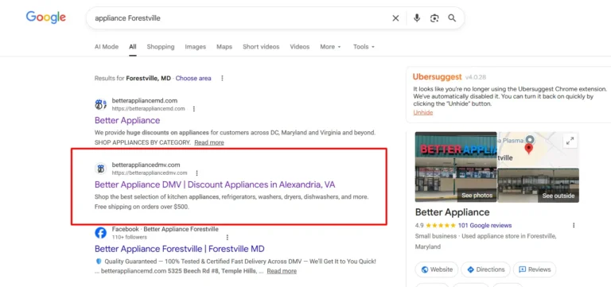

01
Weak local keyword coverage
Important city and service-area searches were not being captured consistently across the website.
Better Appliance DMV needed stronger organic visibility for appliance-related searches across its target service areas. The project focused on technical SEO, local search optimization, content structure, and stronger keyword coverage.

The goal was not only to increase traffic, but to make the website more discoverable for commercial appliance searches in the locations the business actually serves.
Important city and service-area searches were not being captured consistently across the website.
Pages needed clearer keyword targeting, stronger internal relevance, and better alignment with search intent.
The website needed a repeatable SEO system that could grow visibility across categories, locations, and product-related searches.
The work combined on-page SEO, technical improvements, local targeting, content refinement, and stronger page-to-keyword alignment.
Improved crawlability, indexing signals, page structure, metadata, and overall site health.
Assigned search terms to the most relevant category, location, and commercial pages.
Strengthened location relevance for searches around Alexandria, Forestville, and surrounding markets.
Improved copy quality, topical coverage, headings, anchor relevance, and internal navigation between important pages.
Refined page titles and descriptions to better match user intent and improve search-result presentation.

Google Search Console screenshots show a strong rise in impressions and clicks, with a particularly visible acceleration in the later period.




Search-result screenshots demonstrate visibility for location-based appliance searches in important service areas.

Example: Better Appliance DMV appearing for an “appliance Alexandria” search.

Example: Better Appliance appearing prominently for an “appliance Forestville” search.
Review technical issues, indexing, content gaps, keyword coverage, and local relevance.
Focus first on pages and search terms with the strongest business value and ranking opportunity.
Optimize content, metadata, internal links, page targeting, local signals, and technical elements.
Use Search Console data to improve pages based on impressions, clicks, CTR, and ranking movement.
Better Appliance DMV gained much stronger search exposure, substantial click growth, and visible rankings for local commercial terms. The biggest improvement came from combining technical fixes with search-intent targeting and consistent local SEO execution.
Review the evidence